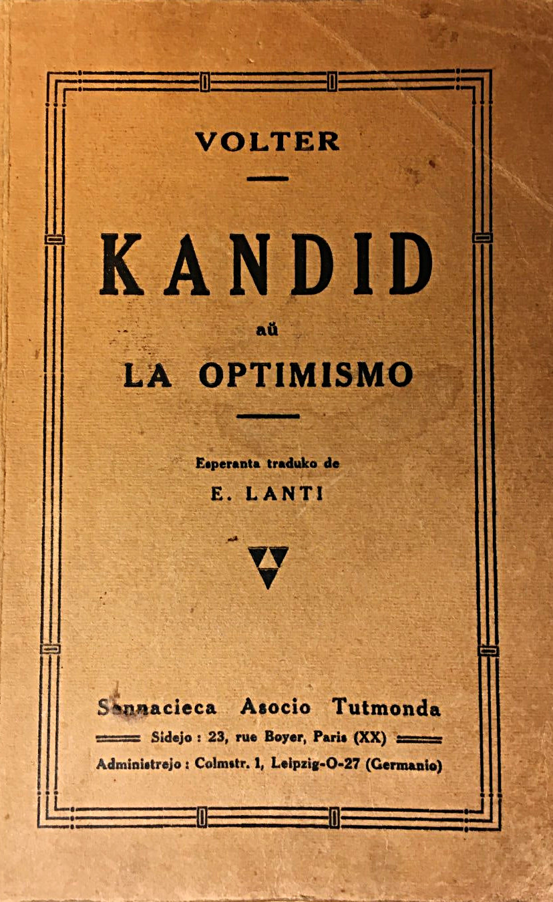
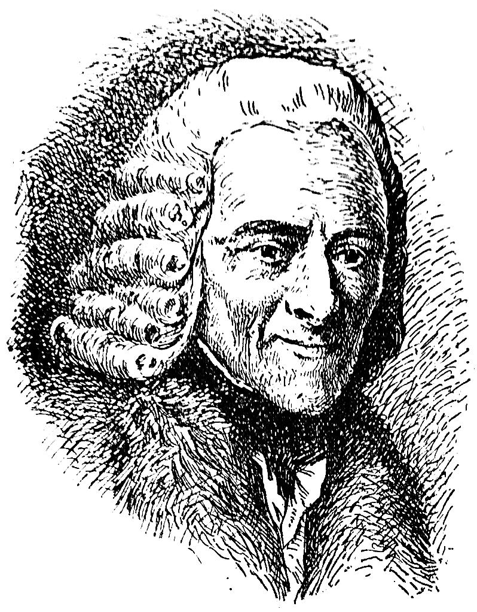

Sennacieca Asocio Tutmonda
Eldona fako kooperativa / Leipzig

Tradukita francen el la germana lingvo de sinjoro doktoro Ralf (↓2), kun la aldonoj, kiujn oni trovis en la poŝo de l' doktoro post lia morto, okazinta dum la favora jaro 1759.

Francois-Marie AROUET
(Pseŭdonime: Voltaire)
1694-1778